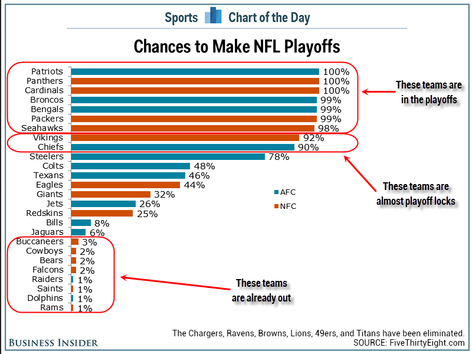

- Jackson Crawford
- My Resume
- My languages:
- Python
- Java
- SAS
- Lua
- Julia
- Rust
- A2
- A3
- A4
- A5
- A6
- A7
- A8
- A9
-
Alpha Release Site [WIP]
Report
- This project was conceived by Dr. Jesse Anttila-Hughes and Dr. Antara Haldar, from the University of San Francisco and University of Cambridge, respectively, and is meant to investigate the evolution of Silicon Valley and the technology industry over time, based on textual data gathered from the WIRED magazine archives. The data to be represented here will be the results of the Natural Language Processing that we have started doing.
- Completed Features:
- Basic Graphs
- Simple NLP Algorithm with good results (word count, hypernyms) and framework for more advanced analysis
- Strucutre and basic implementation for final website (linked above)
- Upcoming Milestones:
- Improved NLP Program
- More graphable results
- Better formatting on final website
- No roadblocks so far!
- A10
- A11
- Part I:
- This is a poor chart because it:
- Fails to establish the measurements
- Does not provide an X Axis
- Does not label the legend
- Does not provide a unit of measurement
- This is an improved chart because it:
- Establishes the units measurement
- Provides an X Axis
- Labels the legend
- Uses a better color palette
- Adds grid lines for better representation
- Provides data source
- Part II

- This is a poor chart because it:
- Is too cluttered
- Does not display every team
- Does not label legend
- Does not display an X axis
- Does not display a Y axis label
- Improved Chart
- This is an improved chart because it:
- Is not cluttered by using opacity as an attribute instead of bulky, ugly annotations
- Displays every team regardless of playoff chances
- Labels the legends
- Adds two X Axes for improved representation in accuracy
- Adds axis labels